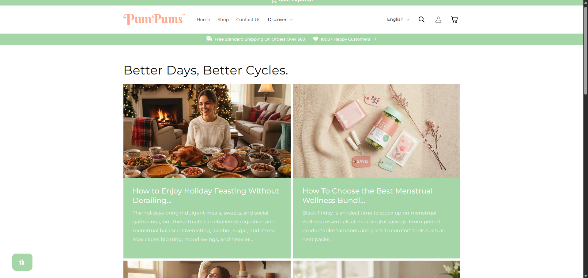
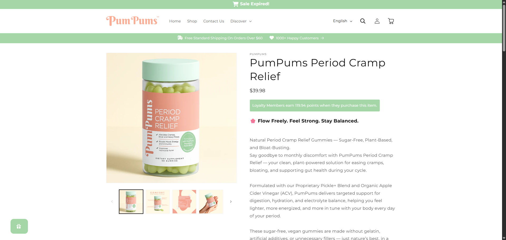
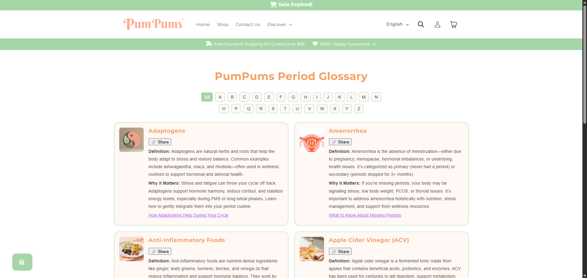
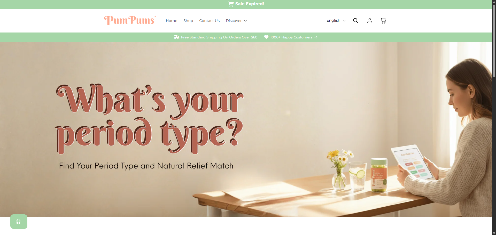

PumPums SEO & Content Strategy

This project focused on building organic visibility and topical authority for PumPums, a brand specializing in menstrual wellness and functional drinks. My role was to optimize their blog, recipe, glossary, and product pages to dominate search results for period relief keywords.
Project Links
Actions Taken: SEO & Content Strategy
- Optimized top-performing blog posts and recipes with keywords related to period relief, functional beverages, and natural remedies.
- Implemented structured data and schema markup (FAQ, Recipe, Article) across all relevant pages.
- Updated headings (H1/H2/H3), meta titles, and descriptions for maximum search visibility.
- Strengthened internal linking to create a cohesive content ecosystem (blogs → glossary → product pages).
- Focused on building topical clusters around high-intent keywords like “pickle juice + magnesium smoothie.”
- Integrated Pinterest and Instagram content to boost social SEO signals and cross-channel engagement.
Results & Performance (Q3: July–September 2025)
Overall Organic Traffic Metrics
Average Click-Through Rate
2%
Top Keywords Driving Traffic:
- pumpums
- magnesium-rich smoothie recipe
- pickle juice for menstrual cramps
- best pain reliever for cramps
- anti-bloat juice recipe
Visuals & Content Strategy
A key part of the strategy was creating visually appealing and informative content. The collage below showcases the diverse range of content created for PumPums, from educational blog posts to interactive quizzes.




Skills Demonstrated
- Keyword Research & On-Page Optimization
- Technical SEO (schema, structured data, canonicalization)
- Content Clustering & Topical Authority Building
- Internal Linking & SEO-Driven Blog Strategy
- Social Integration for SEO (Pinterest & Instagram)